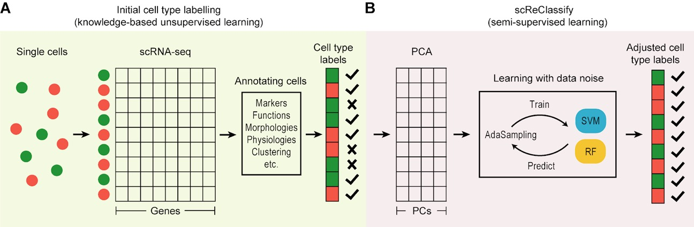

scdney is a R package with collection of single cell RNA-sequencing (scRNA-seq) data analysis functions developed by team of Sydney Precision Bioinformatics Research Group at The University of Sydney.
This package contains useful functions for analysis of scRNA-seq data including clustering, cell type identification, etc.
Getting started
Vignette
You can find the vignette at our website: https://sydneybiox.github.io/scdney/.
Installation
devtools::install_github("SydneyBioX/scdney", build_opts = c("--no-resave-data", "--no-manual"))
library(scdney)For devtools (< 2.0.0),
Building the vignette may take some time. If you wish not to create the vignette during installation, try:
NOTE: For mac users, the official cran mirror of R tools for OS X and R tools for OS X on r.research.att.com that lists the gfortran binary are out of date. You will need to update gfortran and add the following line FLIBS=-L/usr/local/Cellar/gcc/X.Y.Z/lib/gcc/X (where X.Y.Z is your gcc version) to ~/.R/Makevars prior to this package installation.
Usage
Section 1 - Clustering
scClust
See: Kim, T., Chen, I., Lin, Y., Wang, A., Yang, J., & Yang, P.† (2018) Impact of similarity metrics on single-cell RNA-seq data clustering. Briefings in Bioinformatics [https://doi.org/10.1093/bib/bby076]
Current version of this package is implemented to run a modified version of SIMLR (Wang et al, 2017) or k-means clustering methods with various similarity metrics.
Available metrics include:
SIMLR - "pearson" correlation, "spearman" corelation and "euclidean" distance.
K-means - "pearson" correlation, "spearman" correlation, "euclidean" distance, "manhattan" distance and "maximum" distance.
Part A. Clustering with different similarity metrics with scClust
To run scClust,
# SIMLR
simlr.result <- scClust(mat, nCs, similarity = "pearson", method = "simlr", seed = 1, cores.ratio = 0)
# K-means
kmeans.result <- scClust(mat, nCs, similarity = "pearson", method = "kmeans", seed = 1, nstart = 10, iter.max = 10)This function allows you to perform clustering with a user specified similarity metrics. The return values of scClust are identical to clustering methods for Kmeans and SIMLR functions.
Part B. Benchmarking different similarity metrics with scClustBench
This section is to compare a set of similarity metrics on clustering methods to benchmark their perfomance accuracy.
To run scClustBench,
# SIMLR
simlr.result <- scClustBench(mat, nCs, method = "simlr", rep = 2, seed = 1, cores = 1, cores.ratio = 0)
# K-means
kmeans.result <- scClustBench(mat, nCs, method = "kmeans", rep = 2, seed = 1, cores = 1, nstart = 10, iter.max = 10)You can evaluate this result with the function evalScClustBench and plot with plotSimlrEval or plotKmeansEval.
For further demonstrations, see:
Section 2 - Post hoc cell type classification
scReClassify

Current version of this package is implemented to run with svm and radomForest classifiers.
Part A. scReClassify (Demonstration)
Synthetic noise (Demonstration purpose)
Here in this example, we will synthetically generate varying degree of noise in sample labels.
lab <- cellTypes
set.seed(1)
noisyCls <- function(dat, rho, cls.truth){
cls.noisy <- cls.truth
names(cls.noisy) <- colnames(dat)
for(i in 1:length(table(cls.noisy))) {
# class label starts from 0
if (i != length(table(cls.noisy))) {
cls.noisy[sample(which(cls.truth == names(table(cls.noisy))[i]), floor(sum(cls.truth == names(table(cls.noisy))[i]) * rho))] <- names(table(cls.noisy))[i+1]
} else {
cls.noisy[sample(which(cls.truth == names(table(cls.noisy))[i]), floor(sum(cls.truth == names(table(cls.noisy))[i]) * rho))] <- names(table(cls.noisy))[1]
}
}
print(sum(cls.truth != cls.noisy))
return(cls.noisy)
}
cls.noisy01 <- noisyCls(dat.selected, rho=0.1, lab)
cls.noisy02 <- noisyCls(dat.selected, rho=0.2, lab)
cls.noisy03 <- noisyCls(dat.selected, rho=0.3, lab)
cls.noisy04 <- noisyCls(dat.selected, rho=0.4, lab)
cls.noisy05 <- noisyCls(dat.selected, rho=0.5, lab)Benchmark Evaluation
###################################
# SVM
###################################
acc01 <- acc02 <- acc03 <- acc04 <- acc05 <- c()
ari01 <- ari02 <- ari03 <- ari04 <- ari05 <- c()
base <- "svm"
for(j in 1:10) {
final <- multiAdaSampling(dat.selected, cls.noisy01, seed=j, classifier=base, percent=1, L=10)$final
ari01 <- c(ari01, mclust::adjustedRandIndex(lab, final))
acc01 <- c(acc01, bAccuracy(lab, final))
final <- multiAdaSampling(dat.selected, cls.noisy02, seed=j, classifier=base, percent=1, L=10)$final
ari02 <- c(ari02, mclust::adjustedRandIndex(lab, final))
acc02 <- c(acc02, bAccuracy(lab, final))
final <- multiAdaSampling(dat.selected, cls.noisy03, seed=j, classifier=base, percent=1, L=10)$final
ari03 <- c(ari03, mclust::adjustedRandIndex(lab, final))
acc03 <- c(acc03, bAccuracy(lab, final))
final <- multiAdaSampling(dat.selected, cls.noisy04, seed=j, classifier=base, percent=1, L=10)$final
ari04 <- c(ari04, mclust::adjustedRandIndex(lab, final))
acc04 <- c(acc04, bAccuracy(lab, final))
final <- multiAdaSampling(dat.selected, cls.noisy05, seed=j, classifier=base, percent=1, L=10)$final
ari05 <- c(ari05, mclust::adjustedRandIndex(lab, final))
acc05 <- c(acc05, bAccuracy(lab, final))
}
result = list(
acc01 = acc01,
acc02 = acc02,
acc03 = acc03,
acc04 = acc04,
acc05 = acc05,
ari01 = ari01,
ari02 = ari02,
ari03 = ari03,
ari04 = ari04,
ari05 = ari05
)
plot.new()
par(mfrow = c(1,2))
boxplot(acc01, acc02, acc03, acc04, acc05, col="lightblue", main="SVM Acc", ylim=c(0.45, 1))
points(x=1:5, y=c(bAccuracy(lab, cls.noisy01), bAccuracy(lab, cls.noisy02),
bAccuracy(lab, cls.noisy03), bAccuracy(lab, cls.noisy04),
bAccuracy(lab, cls.noisy05)), col="red3", pch=c(2,3,4,5,6), cex=1)
boxplot(ari01, ari02, ari03, ari04, ari05, col="lightblue", main="SVM ARI", ylim=c(0.25, 1))
points(x=1:5, y=c(mclust::adjustedRandIndex(lab, cls.noisy01), mclust::adjustedRandIndex(lab, cls.noisy02),
mclust::adjustedRandIndex(lab, cls.noisy03), mclust::adjustedRandIndex(lab, cls.noisy04),
mclust::adjustedRandIndex(lab, cls.noisy05)), col="red3", pch=c(2,3,4,5,6), cex=1)Part B. - scReClassify (mislabelled cell type correction)
# PCA procedure
dat.pc <- matPCs(dat.processed, 0.7)
dim(dat.pc)
# run scReClassify
cellTypes.reclassify <- multiAdaSampling(dat.pc, cellTypes, seed = 1, classifier = "svm", percent = 1, L = 10)
# Verification by marker genes
End <- c("KDR", "LYVE1")
# check examples
idx <- which(cellTypes.reclassify$final != cellTypes)
library(dplyr)
cbind(original=cellTypes[idx], reclassify=cellTypes.reclassify$final[idx]) %>%
DT::datatable()
c1 <- dat.processed[, which(cellTypes=="Endothelial Cell")]
c2 <- dat.processed[, which(cellTypes=="Erythrocyte")]
c3 <- dat.processed[, which(cellTypes=="Hepatoblast")]
c4 <- dat.processed[, which(cellTypes=="Macrophage")]
c5 <- dat.processed[, which(cellTypes=="Megakaryocyte")]
c6 <- dat.processed[, which(cellTypes=="Mesenchymal Cell")]
cs <- rainbow(length(table(cellTypes)))
# (example 1 E13.5_C20)
#####
par(mfrow=c(1,2))
marker <- End[1]
boxplot(c1[marker,], c2[marker,], c3[marker,], c4[marker,], c5[marker,], c6[marker,], col=cs, main=marker, names=c("Reclassified", "Orignal", "Others", "Others", "Others", "Others"), las=2)
points(1, dat.processed[marker, which(colnames(dat.processed) %in% "E13.5_C20")], pch=16, col="red", cex=2)
marker <- End[2]
boxplot(c1[marker,], c2[marker,], c3[marker,], c4[marker,], c5[marker,], c6[marker,], col=cs, main=marker, names=c("Reclassified", "Orignal", "Others", "Others", "Others", "Others"), las=2)
points(1, dat.processed[marker, which(colnames(dat.processed) %in% "E13.5_C20")], pch=16, col="red", cex=2)
#####Section 3 - single cell differential composition analysis with scDC
Load in example data
data("sim")
exprsMat <- sim$sim_exprsMat
subject <- sim$sim_subject
cellTypes <- sim$sim_cellTypes
cond <- sim$sim_cond
dim(exprsMat)
#> [1] 500 260
table(subject, cellTypes)
#> cellTypes
#> subject n1 n4
#> Cond1_replicate1 24 21
#> Cond1_replicate2 30 27
#> Cond2_replicate1 57 18
#> Cond2_replicate2 66 17
table(cond, cellTypes)
#> cellTypes
#> cond n1 n4
#> Cond1 54 48
#> Cond2 123 35Perform scDC (without clustering)
nboot (number of bootstraps) is set to be 10000 by default. This is the recommended value for achieving the resolution required by confidence interval. In here, we set nboot=50 just for illustration purpose.
The code can be run in parallel environment by passing in the ncores argument. By default , ncores = 1.
res_scDC_noClust <- scDC_noClustering(cellTypes, subject, calCI = TRUE,
calCI_method = c("percentile", "BCa", "multinom"),
nboot = 50)
#> [1] "Calculating sample proportion..."
#> [1] "Calculating bootstrap proportion..."
#> [1] "Calculating percentile ..." "Calculating BCa ..."
#> [3] "Calculating multinom ..."
#> [1] "Calculating z0 ..."
#> [1] "Calculating acc ..."Visualisation
scDC provides two forms of visualisation, barplot and density plot.
The second argument is the label of each sample. In this data, there are 4 samples of cond1 and 4 samples of cond2.
Fitting GLM
Cell count output from each bootstrap can be fitted using GLM, which analyse the significance of variables associated with cell counts. The GLM models are pooled using Rubin’s rules to provide an overall estimates of statistics.
res_GLM <- fitGLM(res_scDC_noClust, c("cond1","cond1","cond1","cond1",
"cond2","cond2","cond2","cond2"),
pairwise = FALSE)
#> Warning in checkConv(attr(opt, "derivs"), opt$par, ctrl =
#> control$checkConv, : Model failed to converge with max|grad| = 0.0151388
#> (tol = 0.001, component 1)
#> [1] "fitting GLM... 10"
#> Warning in checkConv(attr(opt, "derivs"), opt$par, ctrl =
#> control$checkConv, : Model failed to converge with max|grad| = 0.00202052
#> (tol = 0.001, component 1)
#> [1] "fitting GLM... 20"
#> Warning in checkConv(attr(opt, "derivs"), opt$par, ctrl =
#> control$checkConv, : Model failed to converge with max|grad| = 0.0127663
#> (tol = 0.001, component 1)
#> [1] "fitting GLM... 30"
#> Warning in checkConv(attr(opt, "derivs"), opt$par, ctrl =
#> control$checkConv, : Model failed to converge with max|grad| = 0.00690679
#> (tol = 0.001, component 1)
#> [1] "fitting GLM... 40"
#> [1] "fitting GLM... 50"
Summary of GLM results
Fixed effect
summary(res_GLM$pool_res_fixed)
#> estimate std.error statistic df
#> (Intercept) 3.1766364 0.2021867 15.7114008 0.9065430
#> cellTypesn4 -0.1421987 0.2929871 -0.4853411 0.5553828
#> condcond2 0.9811378 0.2385603 4.1127457 0.9450767
#> subjectCond1_replicate2 0.2363888 0.1994143 1.1854153 1.1998800
#> subjectCond2_replicate1 -0.1013525 0.1593158 -0.6361736 1.1998800
#> cellTypesn4:condcond2 -1.0794396 0.3994029 -2.7026332 0.5714735
#> p.value
#> (Intercept) 0.02454555
#> cellTypesn4 0.70113140
#> condcond2 0.11938361
#> subjectCond1_replicate2 0.41965889
#> subjectCond2_replicate1 0.62431043
#> cellTypesn4:condcond2 0.19079656summary(res_GLM$pool_res_random)
#> estimate std.error statistic df p.value
#> (Intercept) 3.3018092 0.1687007 19.5719937 1.2957214 0.01194922
#> cellTypesn4 -0.1422120 0.2929826 -0.4853939 0.9236613 0.69342565
#> condcond2 0.8065714 0.1969060 4.0962264 1.3747009 0.09891140
#> cellTypesn4:condcond2 -1.0794020 0.3993927 -2.7026081 0.9504796 0.16732621scDC (with clustering)
scDC has two options of performing cell type proportion estimates, without clustering and with clustering. When performed without clustering,the estimation does not take into account for the variability from clustering algorithm, and only takes variability from the population into account. When performed with clustering, the estimation takes both into consideration.